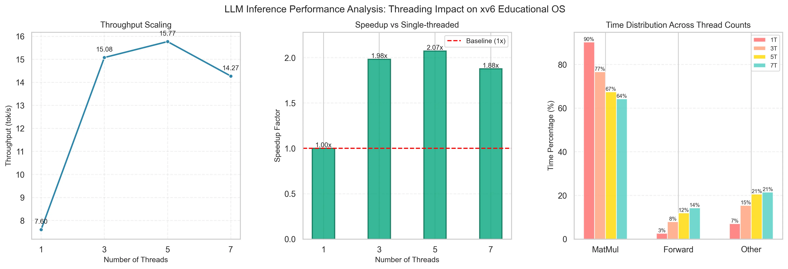

LLM Inference in xv6
The question was simple enough: could you run a modern LLM inference engine on a
minimal educational OS? Turns out you can, but it takes some work. We built a
POSIX-compliant Shared Memory subsystem for the xv6 kernel to
cache model weights (~100MB) without redundant transfers, then implemented
custom threading primitives from scratch and parallelized the
inference engine. End result: 16.2 tokens/sec, up from ~7.
Along the way we also wrote a cycle-accurate profiling library to track call
hierarchies — which is how we found that matrix multiplication was eating
87–92% of inference time. The whole process is documented in a
book covering the methodology and implementation.
Kaggle: Safe Driver Prediction — 1st Place
I entered a Kaggle competition on imbalanced tabular data and ended up
finishing 1st (Private Leaderboard AUROC: 0.64671). The approach was a
stacking ensemble of XGBoost, LightGBM,
and CatBoost with a logistic regression meta-learner, combined
with a preprocessing pass to handle the extensive missing data and drop
non-predictive features.
2D Physics & Orbital Mechanics Engine
I built a modular 2D physics engine from scratch in C++ — rigid
body dynamics, velocity-based movement, AABB collision detection. Then extended it
into an orbital mechanics simulation for gravitational N-body interactions using
numerical integration. Built a real-time visualization layer with SFML so I could
actually watch it run and catch bugs visually.